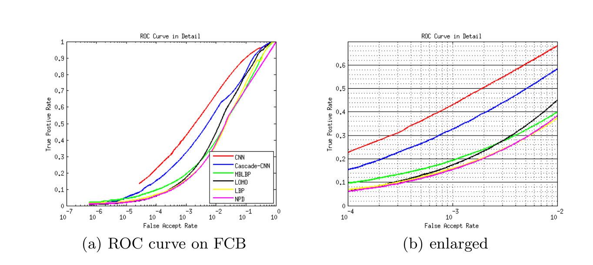

Publications


Face Classification: A Specialized Benchmark Study
Face detection evaluation generally involves three steps: block
generation, face classification, and post-processing. However, firstly, face
detection performance is largely influenced by block generation and post-
processing, concealing the performance of face classification core mod-
ule. Secondly, implementing and optimizing all the three steps results
in a very heavy work, which is a big barrier for researchers who only
cares about classification. Motivated by this, we conduct a specialized
benchmark study in this paper, which focuses purely on face classifica-
tion. We start with face proposals, and build a benchmark dataset with
about 3.5 million patches for two-class face/non-face classification. Re-
sults with several baseline algorithms show that, without the help of
post-processing, the performance of face classification itself is still not
very satisfactory, even with a powerful CNN method. We’ll release this
benchmark to help assess performance of face classification only, and ease
the participation of other related researchers.
Jiali Duan, Shengcai Liao, Shuai Zhou, and Stan Z. Li
CCBR 2016 (Oral)
